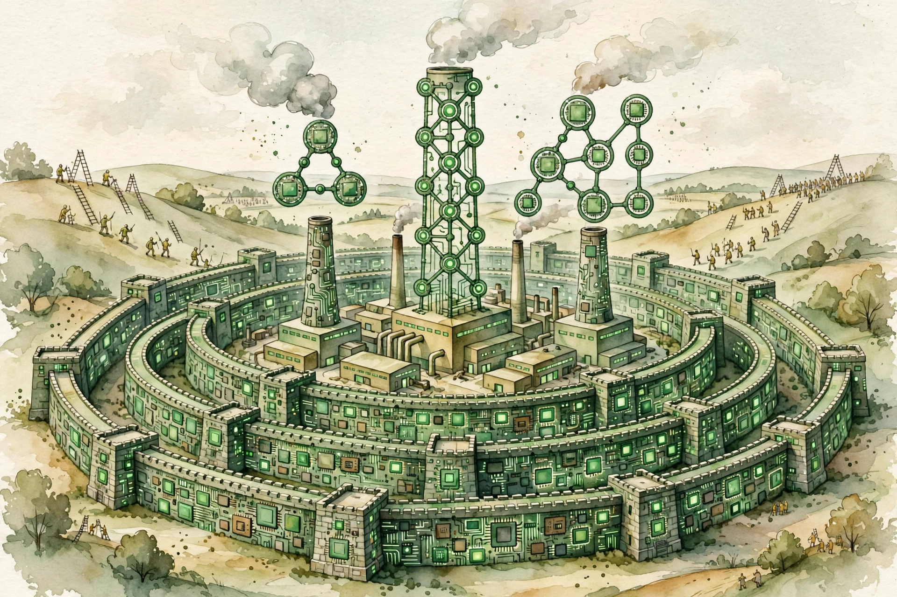
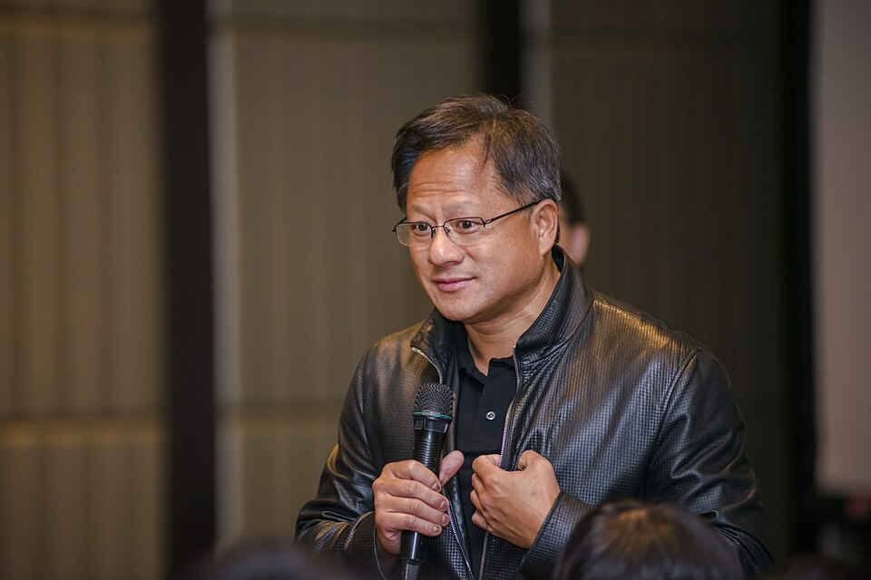

Dwarkesh Patel · Ep 7 · Companion
Jensen Huang
Will Nvidia's moat persist? Dwarkesh presses the CEO on $250 billion in purchase commitments, 70 percent margins, and whether anyone can catch the CUDA stack. Jensen answers with efficiency leaps, AI factories, and a bet-the-farm promise on token costs. This companion follows the full interrogation in order.

Illustration. The five-layer moat: chips, systems, software, and scale. AI-generated watercolor made for this page.
Watch. The official episode video. Use the chapter menu above to jump to any section of this companion as you listen.
The Wisdom Index: every nugget in this companion
§1 · The question
Will the Moat Persist?
Source fact

Photo. Jensen Huang, CEO of Nvidia. Source: Wikimedia Commons.
Dwarkesh opens with the only question that matters for the world's most valuable company. Nvidia holds the best margins in all of AI across hardware and software, above 70 percent, and Dwarkesh credits the "CUDA moat". The question is whether it persists.
Jensen's answer is architectural, not financial. The naive view: Nvidia sends a GDS2 file to TSMC, TSMC builds the logic dies. The real product is the full stack, chips plus networking plus systems plus CUDA plus the libraries, tuned as one machine. A competitor must beat all five layers at once.
Nugget 1 · Moats
The moat is the stack
What happened. Asked about margins, Jensen never mentions pricing power. He describes five layers that must all be beaten at once.
Why it matters. Single-layer advantages get copied. Stack advantages compound, because each layer makes the others harder to displace.
The principle. Build moats in layers, not walls. One deep trench gets bridged. Five shallow ones in series stop everyone.
§2 · The balance sheet
$250 Billion of Promises
Source fact
Dwarkesh cites the filings: almost $100 billion in purchase commitments with foundries, memory suppliers, and packagers. SemiAnalysis reports the real figure at $250 billion. One reading: Nvidia is supply-constrained and buying its way out. Another: it wagers the farm on demand that must materialize.
Jensen reframes it as the cost of the AI factory era. You cannot build the factories without reserving the supply chain years ahead. The commitments are the moat made visible on the balance sheet.
Purchase commitments
Hover any bar for detail.
Source: Dwarkesh Patel interviews Jensen Huang, episode transcript §2. SemiAnalysis figure as cited on the episode.
§3 · The leaps
Efficiency Leaps Beat Moore's Law
Source fact
Moore's law gives about 25 percent a year. Jensen's leaps are 10x, 20x, and from Hopper to Blackwell, 30x to 50x in computing efficiency. When he announced Blackwell would be 35x more energy efficient than Hopper, nobody believed it. Then the numbers landed.
The mechanism is the full stack again. New algorithms ride on CUDA's flexibility: one customer's kernel optimization sped their model up by 3x, 2x, 50 percent, huge numbers at installed scale. The only way to get 10x or 100x, Jensen says, is to fundamentally change the algorithm and how it is computed.
Efficiency leaps vs Moore's law
Hover any bar for detail.
Source: Dwarkesh Patel interviews Jensen Huang, episode transcript §3. All figures are Jensen's stated numbers.
Nugget 3 · Performance
Efficiency leaps beat Moore's law
What happened. While the industry waited on 25 percent a year, Nvidia shipped 30 to 50x by changing algorithms and the stack together.
Why it matters. Transistor scaling is one lever among many. The bigger lever is co-design across the whole system.
The principle. When the physical limit binds, change the algorithm. The next 10x lives in software, not silicon.
§4 · The promise
Bet the Farm on Token Costs
Source fact
Jensen's pitch to every customer: build AI factories, because the economics only work at factory scale. And his promise, the line he says a customer can count on like a clock:
Your token cost will decrease by an order of magnitude every single year.
Jensen Huang's promise to customers · Episode transcript §4
The full version is stronger: he says he can bet the farm, his entire business, that Nvidia will be there every single year delivering it. Token cost down 10x per year, as reliable as clockwork.
Nugget 2 · Promises
Bet on token cost falling 10x a year
What happened. Jensen turned a roadmap into a contractual-sounding promise: 10x cheaper tokens every year, bankable like clockwork.
Why it matters. Customers bet billions on the cost curve. A credible 10x-per-year promise unlocks the AI factory build-out.
The principle. Make the cost curve a promise, then keep it. Predictability compounds faster than performance.
Toy: the token cost projector
Jensen's promise: 10x cheaper every year. Drag to project.
Straight application of Jensen's stated 10x-per-year promise. Not a forecast by the builder.
§5 · Who buys
Serve the Hyperscalers, Seed the Neoclouds
Source fact
Sixty percent of Nvidia's revenue comes from the big five hyperscalers. Dwarkesh asks the concentration question plainly. Jensen's answer has two parts: keep the giants happy, and make sure the neoclouds exist. He names CoreWeave, Crusoe, and Lambda as recipients of supply, and asks aloud, "Do we want to be in the financing business?" The answer is pragmatic: the ecosystem needs them alive.
He is explicit that Nvidia does not prioritize neoclouds just to prop them up. The allocation follows demand. But a world with only five buyers is fragile, so seeding the next layer is strategy, not charity.
Where the revenue comes from
Hover any bar for detail.
Source: Dwarkesh Patel interviews Jensen Huang, episode transcript §5.
Nugget 4 · Customers
Serve the hyperscalers, seed the neoclouds
What happened. Sixty percent of revenue from five buyers, and deliberate supply to the next layer: CoreWeave, Crusoe, Lambda.
Why it matters. Concentration is efficient and brittle. A second layer of buyers is insurance against the first layer's moods.
The principle. Feed your biggest customers and breed your future ones. Optionality is built, not found.
§6 · The challengers
Seventy Percent Worse Is Good Enough
Source fact
Dwarkesh walks through the challengers: TPUs, Trainium, the in-house silicon. Jensen's technical take: a TPU is a big systolic array, perfect for matrix multiplies. A GPU is flexible, better at branching and irregular memory access. Different tools, different shapes.
Then the competitive threshold, in his telling: a challenger does not need to be better. It just needs to be "not more than 70% worse", because at sufficient discount the economics flip. He welcomes the benchmarks: he would love to see Trainium demonstrate the 40 percent it claims, on MLPerf, in public.
He also punctures the independence narratives. TPU growth, he says, is 100 percent Anthropic. Without Anthropic there is no TPU growth story at all.
Nugget 5 · Competition
Seventy percent worse is good enough
What happened. Jensen names the real bar for challengers: not beating Nvidia, just staying within 70 percent at a discount.
Why it matters. Incumbents watch for superiority. Disruption arrives at good enough and cheaper.
The principle. Defend against the discount, not the benchmark. The threat is adequate and cheap, not better.
§7 · The industry
Do Not Be a Radiologist
Source fact
Whatever you do, don't be a radiologist.
Jensen Huang's career advice · Episode transcript §7
The line lands as a joke and a forecast. Radiology is the canonical profession AI was supposed to eat first, and the broader point is serious: pick work where the human's judgment compounds rather than where the pattern matching does. Then he zooms out to the industry's size, reasoning through why it will be enormous, and showing what he sees from the center of it.
Nugget 6 · Careers
Do not be a radiologist
What happened. Jensen's one-line career advice picks the profession most exposed to pattern-matching automation.
Why it matters. The advice generalizes: avoid work that is pure classification. Seek work where judgment accumulates.
The principle. Choose the job AI makes more valuable, not the one it makes redundant. Judgment compounds. Classification does not.
§8 · Supply
Capacity Never Comes Back
Source fact
On China, Jensen is clinical. SMIC runs behind on process nodes, so Chinese builders lean on older nodes like 7nm, where abundant energy and manufacturing scale still let them compete. The constraint is the leading edge, not effort.
His closing line on supply is the one buyers should memorize: we are just never going to have more capacity ever again. Every buyer who waits for a glut waits forever. The factory era means permanent scarcity at the frontier.
Nugget 7 · Supply
Capacity never comes back
What happened. Jensen tells buyers the frontier will never have slack again. The queue is the permanent condition.
Why it matters. Buying strategy built for gluts fails in permanent scarcity. Reserve early or wait indefinitely.
The principle. When the supplier says scarcity is structural, believe the structure. Plan for the queue, not the sale.
The episode in seven lines
- The moat is five layers deep: chips, networking, systems, CUDA, libraries. Beat all of them at once.
- Margins above 70 percent are the receipt, not the strategy.
- Hopper to Blackwell: 30 to 50x efficiency. Moore's law is the slowest lever.
- Token costs fall 10x a year, promised like clockwork. That promise builds the AI factories.
- Sixty percent of revenue from five buyers. Seed the neoclouds as insurance.
- Challengers need only be not more than 70 percent worse. Defend the discount, not the benchmark.
- Frontier capacity never comes back. Reserve early.
Distilled from Dwarkesh Patel's interview with Jensen Huang (video id Hrbq66XqtCo). All figures are the guest's statements or cited estimates from the episode transcript.